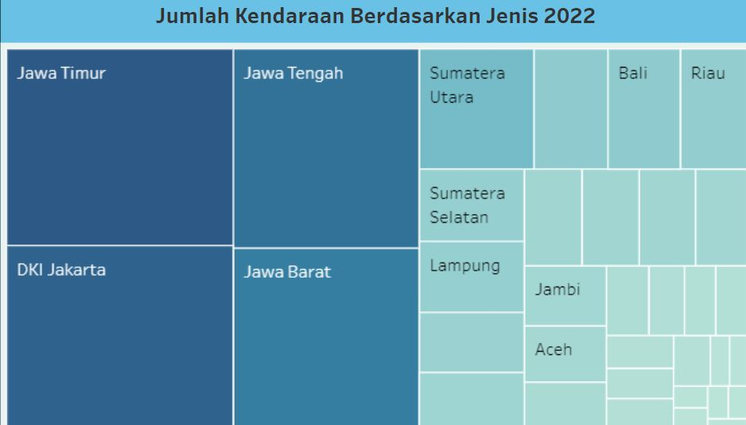
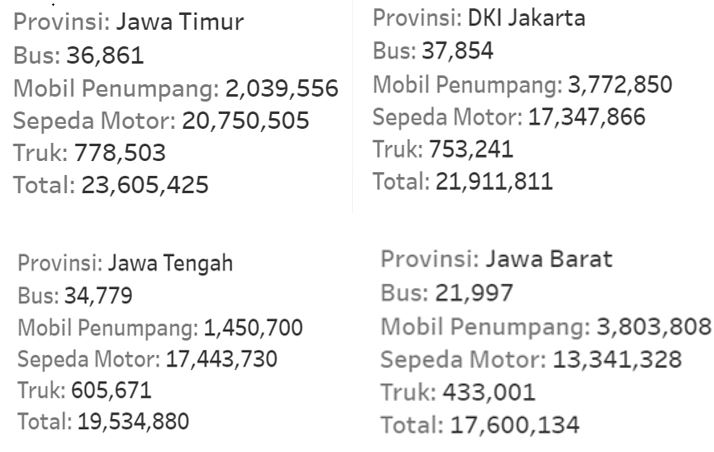

Portfolio Details
1. Data Storytelling: Comparison of Population and Vehicle Numbers (2022) Using Tableau Visualization

Project information
- Category: Data Visualization
- Skills: Tableau
- Project URL: Project Tableau
- Data Sources: Badan Pusat Statistik (BPS)
 August 10, 2024 by Lutfia Hayatun Nufus
August 10, 2024 by Lutfia Hayatun Nufus
According to official data recorded by BPS, in 2022, 34 provinces in Indonesia had a total population of 275.774 million people. Meanwhile, the total number of vehicles in 2022 was recorded at 148,261,817 units, consisting of buses, passenger cars, trucks, and motorcycles. This reflects significant growth in vehicle ownership, contributing to increased mobility across the country. Many individuals likely own more than one type of vehicle, as evidenced by the comparison between the population and the total number of vehicles. This trend indicates that the vehicle-to-population ratio is approaching one vehicle per individual, which could have implications for road infrastructure and future transportation policies.

The continuous increase in vehicle ownership is primarily driven by significant urbanization, particularly on the island of Java. This urbanization is driven by easy access to various facilities across multiple sectors, which support the improvement of living standards. These facilities include healthcare services, higher education, job opportunities, and tourist destinations. Additionally, the development of road infrastructure in urban areas has further facilitated mobility, contributing to the growing number of vehicles in the region.


The chart above displays a comparison of the population and the number of vehicles across several provinces. East Java, with the second-largest population of 41,150,000 people, ranks first in vehicle ownership, with a total of 23,605,425 units. In second place is DKI Jakarta, which has a relatively small population of only 10,680,000 people, but records the second-highest number of vehicles, totaling 21,911,811 units. Next, Central Java, with the third-largest population of 37,032,000 people, has 19,534,880 vehicles. Despite having the largest population, at 49,406,000 people, West Java ranks fourth with 17,600,134 vehicles. This comparison highlights the high rate of vehicle ownership in densely populated areas, driven by significant urbanization and the availability of public transportation infrastructure.
 